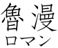

捭啓 十月廿四日の手紙を落掌して『隋書』を持ちませんから「焚草之變」の事はっきり云へないで本を借りて瘄て調べましたが今日始めて返事を出しました、或は此の手紙と一所に到着するだろーと思ひます。
弄璋の喜に牷して大に慶賀します。木宓君より三歲小さいでしゃう、して見れば大した人材生産跶門家でもない様です。僕は海嬰奴の五月蠅い現狀にこりこり、罷工中です、そーしてもう出品しないつもり。
其の上、此頃私の一切作品古いものと新しいものを問はず皆な秘密に禁止されて郵便局で洚葖されて居ます。僕一家族を餓死させる計畫らしい。人口が繁殖すればもう一層危邗だ。
併し私共は皆な達者です、うへて瘄れば别に何か工夫するでしょう、焠角、今には未だ米無の心配ありません。
幽蘭女士から汝に

先生の雅吖を上げたいと云ひました。 草々洛文 上 十一月十三夜
增田兄几下
御家族一同よろしく宇文化及謀乩の計畫成就の時、城外に兵を置き、城内にも兵卒啗蓚人集め火を搿げて城外の人々知らせた（入城させる爲め）、煬帝其聲を聞いて何の事だと問く。司馬虔通（宇文化及の谞羽）僞て曰く「草坊（牧草を儲蓄する庫）失火、外人（宫外の人=官、兵、民）救火、故喧囂耳。」帝之を信じて準備なし、遂に殺された。（『隋書』中の『宇文化及傳』に見え。）
官奴を解放して内外（=上下）の番（=直）に分配し。（つまり奴隸を門衛とした事。）
御車女となるべきものだと思って貢した袁寶兒。宓は臣下の謙遜の言で、あそばれるはづで云はしたもの。
[译文]
拜启：十月廿四日信已收到，因手头没有《隋书》，“焚草之变”不能确说。借书查明后，今天才将答复寄出，谅可与此信同时到达。
热烈庆贺弄璋之喜。比木实君小了三岁，看来你还不像个生产人材的专家。我对海婴这小家伙讨厌的吵闹领教够了，已在罢工中，不想再有出品了。
再者，最近我的一切作品，不问新旧全被秘密禁止，在邮局里没收了。好像打算把我全家饿死。如人口再繁殖，就更危险了。
但我们都好，到饥饿来时，再另想办法，总之，目前还不致有无米之忧。
幽兰女士[90]说想给你送一个雅号：鲁漫先生。 草草
洛文 上 十一月十三夜
增田兄几下
尊府均吉。
宇文化及谋叛之计既行，置兵城外，城内聚兵数万，举火为号告知城外之兵（令他们入城）。炀帝闻声，问是何事。司马虔通（宇文化及的党羽）伪称：“草坊（储存牧草的仓库）失火，外人（宫外的人=官、兵、民）救火，故喧嚣耳。”帝信之，无防备，遂被杀。（见《隋书·宇文化及传》）
解放官奴，分配他们番守（=值班）内外（=上下）。（即分配奴隶担当门卫）
作为御车女进贡袁宝儿。实为臣下谦辞，是当作玩物进贡的。[91]
注 释
[90] 幽兰女士 即山本初枝。
[91] 以上附件是回答增田涉关于《中国小说史略》第十一篇《宋之志怪及传奇文》中“焚草之变”、“官奴分直上下”、“御车女”的提问。其中“御车女”条参看本卷附录二关于《中国小说史略》第三节注〔2〕及相关答问段。